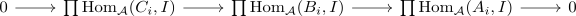
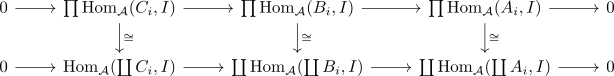
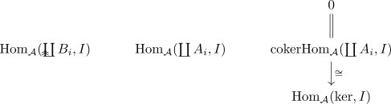

category with enough injectives implies exact coproducts
Proposition
Let $\mathcal{A}$ be an abelian category with enough injectives. Then coproducts are exact
Proof
a)
Let $\mathcal{I}$ be the full subcategory containing injective objects Then consider the restricted yoneda embedding of an additive category
it is fully faithful (abelian category with enough injectives and restricted yoneda embedding), preserves products in $\mathcal{A}^{\mathrm{op}}$ and is exact, as it is objectwise exact (cf. contravariant ab-hom functor as exact functor and injective object).
Therefore it is also faithfully exact functor (cf. faithfully exact functor as exact and faithful functor)
Then $\mathrm{Fun}(\mathcal{A}, mathrm{Ab})$ is Ab4 opp (cf. functor category of an ab4opp category as ab4opp category, category rmod as ab4opp category )
By exact subcategory and Ab4 opp we conclude that
b)
Note that colimit functor are right exact functor, hence it suffices to show that monomorphisms are preserved. Let
be monomorphism and $C_i$ the cokernel
Let $K \coloneqq \mathrm{ker}(\coprod A_i \rightarrow \coprod B_i)$ be the kernel By assumption we may choose an injective object $I$ with a monomorphis $K \hookrightarrow I$
Then we get an exact sequences

as category RMod as AB4 opp category
But the contravariant ab-hom functor dualizes colimits, hence

therefore
is an epimorphism
But by exactification we get an

where
follows as the morphism $\mathrm{Hom}_{\mathcal{A}}(\coprod B_i, I) \twoheadrightarrow \mathrm{Hom}_{\mathcal{A}}(\coprod A_i, I)$ is an epi and
holds again by dualizing colimits
Thus the monomorphism $K \hookrightarrow I$ is the zero morphism, hence by zero morphism as monomorphism and domain as zero object we conclude that $\mathrm{ker} = 0$ or
is a mono